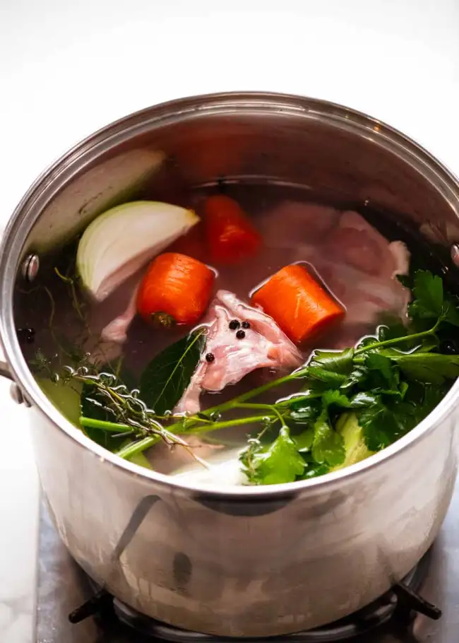

Chicken Stock

Stocks are the foundation for countless dishes in many cuisines. Chicken stock is one of the most common and versatile stocks in Western cooking, and is made by infusing water with the flavours of chicken, fresh root vegetables and herbs. Good restaurants always make their own stocks, and is the secret to why their dishes often have that richer, deeper, “restaurant-quality” taste to them!
ingredients
- Chicken Breast
- Skin-on, bone-in chicken pieces
- Wing tips
- Chicken feet
- Whole chicken
- Giblets
- Frame of cooked whole chicken
- Bay leaves, thyme, parsley, black peppercorns
- Onion, celery and carrot
- Cider vinegar
Preparation
- Put everything in a large stock pot – Place the chicken carcasses, vegetables, herbs and water in a large 7 litre /7 quart stock pot. 3 litres / 3 quarts of water should just about cover everything. If not, do a bit of pushing and poking to rearrange the carcasses and ingredients more snugly in the pot. Try not to break or crush the bones else this will make the stock murkier.
We want everything submerged so the water gets infused with flavour. Don’t worry if some of the bones are poking above the water surface. The carcasses will collapse once it starts cooking and end up under the water.
- Scoop off scum – Bring the pot to a rapid simmer over medium-high heat. As it starts getting hot, you will see foam on the surface which is the impurities in the chicken. Scoop it off and discard to keep your stock nice and clear.
- Simmer 3 hours
- After simmering
- Strain – Using the lid of the pot to hold back the bones and vegetables in the pot, strain the stock through a fine mesh strainer into another pot or large bowl. I use a pot in case I need to reduce it to the right amount (see below)..
If you’re not strong or comfortable with the lid method, just fish out the solids with tongs or a large straining spoon before pouring the remaining liquid through a sieve.
The goal: To end up with 2 litres / 2 quarts of chicken stock. In a perfect world, you will end up with 2 litres / 2 quarts of chicken stock. But it is rarely a perfect world! And that’s ok. If you have less, than this just top up with water. If you ended up with more than about 2.25 litres / quarts, then reduce it on the stove, else you run the risk of a weak-flavoured chicken stock.
- Leftover bones and vegetables
Voila! Admire your beautiful and clear chicken stock!
- Divide between storage containers
- Cool then refrigerate – Once the stock is cooled to room temperature, place them in the fridge to fully cool. Never put hot stock in the fridge!
- Solidified fat – As the stock cools, the fat will rise to the surface. Once fully cold, the fat solidifies and turns into a white sheet of solid fat on the surface of the stock, like a frozen-over lake.
You will also notice that the chicken stock firms up into a jelly-like consistency when cold. This is due to the gelatin. We want gelatin – it’s what gives the stock a delicious, lip-sticking, rich mouthfeel you don’t get in store-bought stock (ever notice how store-bought stock never sets like this in the fridge?) So basically, jelly consistency = good stock!
- Scrape off fat – Scrape the fat off the surface using a spoon and discard. This is actually an optional step. It makes the stock light and clean, making it a great all-rounder that can be used for everything from clear soups (like Chinese Noodle Soup) to rich sauces (like the sauce of a Creamy Chicken Pasta). For a jus or reduction sauces you should also use de-greased stock.
But if you are intending to use the stock for things like stews (like this one) and creamy sauces (like Mushroom Sauce) that do not require a clear, de-greased chicken stock like we desire for things like Chicken Noodle Soup, then there is no need to remove the fat.
- Storing – Homemade stock will keep for 5 days in the fridge or for 6 months in the freezer.
Fridge-cold chicken stock can be used as is, in its jelly-like state. It melts back into liquid form very quickly as soon as it’s heated.
If using from frozen, thaw overnight in the fridge, microwave, or run the container under hot water to loosen, then melt in a saucepan. Though if I’m adding the stock into an already-simmering liquid sometimes I’ll just add the frozen stock block as-is! It melts fairly fast and the result is the same. I use all of these methods depending on how much time I have